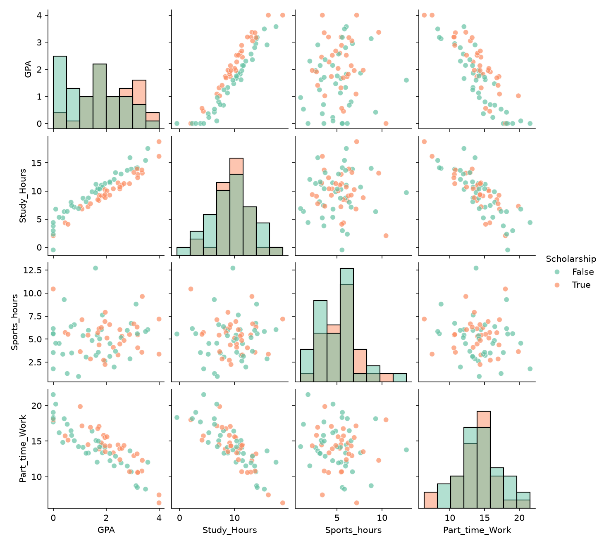
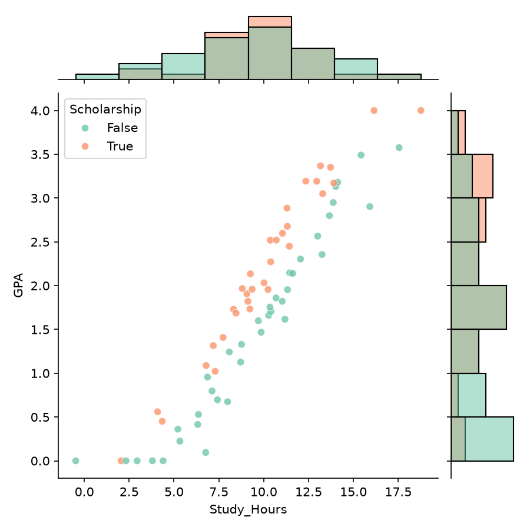
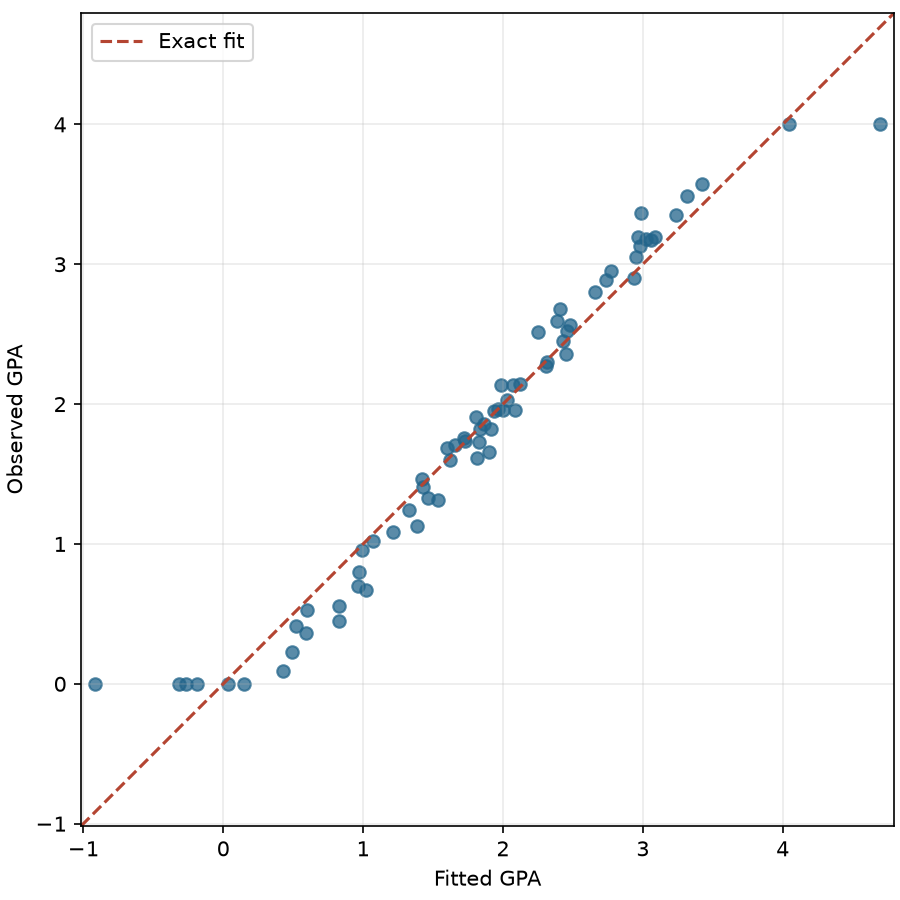

重回帰分析と偏回帰係数 / GPA の重回帰分析
勉強時間と GPA の関係を調べるとき, 奨学生かどうかやアルバイト時間も記録してあれば, それらの条件をそろえて学生を比べられます. 回帰式にどの変数を入れるかによって, 勉強時間の係数が表す比較が変わります.
偏回帰係数とそろえる条件
GPA を目的変数とし, 奨学生区分 x_1, 週あたりの勉強時間 x_2, 週あたりのアルバイト時間 x_3 を説明変数とします. 奨学生を x_1=1, 非奨学生を x_1=0 とします. 3 つの説明変数を入れた線形の重回帰式は, 次の形になります.
m(x_1,x_2,x_3)=\beta_0+\beta_1x_1+\beta_2x_2+\beta_3x_3.
m は指定した条件の学生について, 式が表す平均 GPA です. 例えば, 奨学生区分とアルバイト時間が同じで, 勉強時間だけ週 1 時間長い学生の平均を比べると, 式の差は次のようになります.
m(x_1,x_2+1,x_3)-m(x_1,x_2,x_3)=\beta_2.
共通する切片と, 奨学生区分とアルバイト時間の項が差し引かれます. 重回帰式の各説明変数に付く係数を偏回帰係数と呼びます. 線形の重回帰式では, 他の説明変数が同じ個体どうしで, その説明変数が 1 単位違うときの, 式が表す平均の差です.
アルバイト時間を式に入れる場合と入れない場合
架空の学生 20 万人分の観測 GPA に, 奨学生区分と勉強時間を共通に含む 2 つの式を当てはめました. 数値は架空の母集団での最小二乗係数の近似です. GPA は 0 と 4 で打ち切った値なので, 式は観測 GPA の平均の関係を線形式で近似します.
| 式に入れる説明変数 | 式が表す平均 GPA の近似 | 勉強時間の係数が表す比較 |
|---|---|---|
| 奨学生区分, 勉強時間, アルバイト時間 | 0.684+0.531x_1+0.219x_2-0.088x_3 | 奨学生区分とアルバイト時間が同じ学生どうし. 勉強時間が週 1 時間長い学生ほど, 平均 GPA は式の上で約 0.219 高い |
| 奨学生区分, 勉強時間 | -1.069+0.531x_1+0.272x_2 | 奨学生区分が同じ学生どうし. アルバイト時間には条件を付けない. 勉強時間が週 1 時間長い学生ほど, 平均 GPA は式の上で約 0.272 高い |
例えば, 同じ奨学生区分で週 10 時間と週 11 時間勉強する学生を比べます. 両方のグループを週 14 時間アルバイトする学生にそろえるなら, 使うのは表の 1 行目の式です. アルバイト時間を問わずに週 10 時間と週 11 時間の学生を比べるなら, 表の 2 行目の式を使います. どちらの係数を報告するかは, どの条件をそろえた比較が知りたいかで決まります. 学生に勉強時間を増やす介入をした場合にどうなるかは, 因果推論で扱います.
推測に使う説明変数は, どの条件をそろえるかという問いに沿って, データを見る前に決めます. 同じデータで変数を選んでから区間や P 値を通常の方法で計算すると, 選択の手順が計算に入らず, 予定した被覆率や有意水準を保てないことがあります. 変数を選んだ後の推測はモデル選択で扱います.
表の係数は, 配布データと同じ仕組みで取り直した大きな標本から得ました. GPA の重回帰分析では, 配布する 100 人の標本を学習用と評価用に分け, 学習用の 70 人で係数と区間を求めます.
奨学生区分を表すダミー変数
奨学生区分は, 学生を奨学生と非奨学生の 2 つに分ける質的な変数です. 区分を表すために, 該当すれば 1, 該当しなければ 0 を入れる変数をダミー変数と呼びます. 奨学生区分を表す x_1 では, 0 を割り当てた非奨学生が比較の基準です.
偏回帰係数とそろえる条件で求めた, アルバイト時間を含む式に x_1=0 と x_1=1 をそれぞれ入れます. 同じ勉強時間を x_2, 同じアルバイト時間を x_3 とすると, 2 つの区分の式は次のとおりです.
\begin{aligned} m(0,x_2,x_3)&=0.684+0.219x_2-0.088x_3, \\ m(1,x_2,x_3)&=0.684+0.531+0.219x_2-0.088x_3. \end{aligned}
勉強時間とアルバイト時間が同じなら, 奨学生の平均 GPA は非奨学生より式の上で約 0.531 高いと読みます. この式では両区分で勉強時間とアルバイト時間の傾きが共通なので, 時間をどこでそろえても, 式が表す区分間の差は一定です.
0 と 1 の割り当てを反対にすると, 基準が奨学生になります. 非奨学生と奨学生を引く順序も反対になるので, 対応する係数は約 -0.531 です. 学生ごとの当てはめ値は, 割り当てと式をそろえて変更すれば同じです.
係数の単位と標準化
勉強時間の係数 0.219 の単位は, 週 1 時間あたりの GPA の差です. 勉強時間を週あたりの分数で記録し直すと, 同じ比較は週 60 分の差で表せるため, 係数は 0.219/60 になります. アルバイト時間や GPA の記録を変えなくても, 勉強時間の単位を変えれば勉強時間の係数の数値は変わります.
標準偏差を単位にする
それぞれの変数が典型的にばらつく幅を基準に比較するには, 標準化を使えます. 変数 x_j の観測値 x_{ij} から標本平均 \bar x_j を引き, その変数の標本標準偏差 s_{x_j} で割ります.
z_{ij}=\frac{x_{ij}-\bar x_j}{s_{x_j}}.
標準偏差が正なら, 標準化した変数の平均は 0, 標準偏差は 1 です. 勉強時間だけを標準化し, GPA は元の単位で当てはめると, 勉強時間の係数は「勉強時間が 1 標準偏差違う学生間での GPA の差」を表します. GPA も標準化すると, GPA の差も GPA の標準偏差を単位として表します.
勉強時間とアルバイト時間を標準化すると, それぞれが 1 標準偏差違うときの平均の差を比べられます. 標準偏差は学生をどこから選ぶかで変わるので, 標準化した係数を報告するときは, どの集団のばらつきを基準にしたかも示します. 週何時間の差に対して GPA がどれだけ違うかを述べるには, 元の単位の係数が対応します. 奨学生区分のようなダミー変数を 0 と 1 のまま使えば, 係数を区分間の差として読めます.
多重共線性と係数の精度
偏回帰係数を精度よく求めるには, 他の説明変数をそろえた範囲でも, 関心のある説明変数の値にばらつきが必要です. 例えば, 勉強時間とアルバイト時間に強い関連があると, アルバイト時間が近い学生の間で勉強時間に残る差は小さくなります. ある説明変数が他の説明変数の線形式でよく表せる状態を多重共線性と呼びます. 説明変数が 3 つ以上なら, 変数を 2 つずつ比べるだけでは見つからない場合もあります.
分散拡大係数と区間の幅
勉強時間のばらつきのうち, 奨学生区分とアルバイト時間でどれだけ当てはめられるかを調べます. 勉強時間を目的変数, 残りの説明変数を説明変数にした切片つきの回帰を行い, その決定係数を R_2^2 とします. R_2^2 が 1 に近いほど, 他の変数をそろえた後に勉強時間に残るばらつきが小さくなります. この回帰を補助回帰と呼びます.
一般に, 第 j 説明変数の補助回帰の決定係数を R_j^2 とすると, 分散拡大係数 (VIF) は次の式で求められます.
\mathrm{VIF}_j = \frac{1}{1-R_j^2}.
線形回帰で誤差が等分散の場合, 他の説明変数をそろえた後に残る x_j の二乗和は, x_j 全体の平均まわりの二乗和の 1-R_j^2 倍です. 係数の分散はこの残った二乗和に反比例します. 誤差分散と x_j 全体の散らばりが同じ場合を比べると, 他の説明変数と無相関の場合に比べて, 係数の分散は \mathrm{VIF}_j 倍, 標準誤差は \sqrt{\mathrm{VIF}_j} 倍になります. 残差の自由度も同じなら, 同じ信頼水準の区間の幅も \sqrt{\mathrm{VIF}_j} 倍になります.
架空の学生 20 万人の例で, アルバイト時間を含む式の勉強時間の VIF は約 2.45 でした. 他の条件を同じとした場合の標準誤差の倍率は約 1.56 です. 実際に説明変数を出し入れすると, 残差の分散や係数が表す比較も変わります. 区間の幅は各式で求め, 比べた条件と一緒に報告します. 例えば, アルバイト時間を固定した比較が問いなら, アルバイト時間も式に入れ, 勉強時間の係数をその信頼区間の幅とともに報告します.
完全な多重共線性で係数が一つに決まらない場合
例えば, 勉強時間を時間単位と分単位の 2 列で記録したとします. 時間単位を x, 分単位を z とすると, 全員について z=60x が成り立ちます. ある説明変数が他の説明変数の 1 次式 (定数項を含めてもよい) で表されるとき, 完全な多重共線性があるといいます.
a+b x+c z=a+(b+60c)x.
勉強時間にばらつきがあれば, 当てはめで定まるのは, 2 つの係数の組み合わせ b+60c です. 例えば b=0.24, c=0 と, b=0, c=0.004 は, 同じ当てはめ値を与えます. どちらも b+60c=0.24 なので, 当てはめから b と c を一つずつ求めることはできません. 時間と分は同じ量を表すので, 週 1 時間の差を問う場合は時間の列だけで式を作れます.
演習
Exercise REG-MULTIPLE-1
アルバイト時間と奨学生区分をそろえる比較
式 m(x_1,x_2,x_3)=0.684+0.531x_1+0.219x_2-0.088x_3 を使います. 勉強時間が週 2 時間違う学生を比べるとき, 式の上での平均 GPA の差はいくつですか. どの条件をそろえるかも答えてください. 次に, 奨学生かどうかを比べるときの条件と平均 GPA の差を答えてください.
回答
勉強時間の比較では, 奨学生区分と週あたりのアルバイト時間をそろえます. 勉強時間が週 2 時間長い学生の方が, 式の上での平均 GPA が 2\times 0.219=0.438 高くなります. 奨学生かどうかの比較では, 勉強時間とアルバイト時間をそろえます. 奨学生の方が, 式の上での平均 GPA が 0.531 高くなります.
Exercise REG-MULTIPLE-2
合計時間を加えたときの係数
週あたりの勉強時間を x_2, アルバイト時間を x_3 とします. この 2 列に合計時間 u=x_2+x_3 を加え, 式 a+b x_2+c x_3+d u で GPA を当てはめます. b,c,d は一つずつ決まりますか. u に x_2+x_3 を代入して答えてください.
回答
代入すると, 式は a+(b+d)x_2+(c+d)x_3 になります. d に任意の値を加え, b と c から同じ値を引いても, 当てはめ値は同じです. 合計時間は勉強時間とアルバイト時間の和なので, 完全な多重共線性があります. b,c,d を一つずつ決めるには, データの当てはめ以外の条件が必要です.
GPA の重回帰分析
奨学生かどうかと週あたりのアルバイト時間が同じ学生どうしで, 週あたりの勉強時間が 1 時間違うと, 平均 GPA はどれだけ違うでしょうか.
比べる条件を式に入れ, GPA ~ Scholarship + Study_Hours + Part_time_Work とします.
運動時間もデータに記録されていますが, 問いでそろえる条件に含めていないため, 式には入れません.
データを見て変数を選ぶ手順は モデル選択 で扱います.
合成 GPA の学習用データ
multiple_regression.csv には, 合成した 100 人分のデータが入っています.
CSV をダウンロードしてコードと同じフォルダに置き, そのフォルダからコードを実行してください.
先頭列は CSV の保存時に書き出された行番号です.
index_col=0 で行のインデックスとして読み込みます.
import matplotlib.pyplot as plt
import pandas as pd
import seaborn as sns
import statsmodels.formula.api as smf
from sklearn.model_selection import train_test_split
from sklearn.preprocessing import StandardScaler
from statsmodels.graphics.regressionplots import plot_partregress_grid
from statsmodels.stats.outliers_influence import variance_inflation_factor
df = pd.read_csv("multiple_regression.csv", index_col=0)
train, test = train_test_split(df, test_size=0.3, random_state=0)
print(f"Training: {len(train)}, held out: {len(test)}")Training: 70, held out: 30読み込んだ直後に最終評価用の 30 人を取り分けます.
random_state=0 は分割を再現するための指定です.
残った 70 人 (train) で図と表を作り, 回帰式を求めます.
取り分けたデータの使い方は 未使用のデータで予測誤差を測る で扱います.
| 列 | 内容 |
|---|---|
GPA |
GPA (0〜4 点) |
Scholarship |
奨学生かどうか (True または False) |
Study_Hours |
週あたりの勉強時間 (時間) |
Part_time_Work |
週あたりのアルバイト時間 (時間) |
Sports_hours |
週あたりの運動時間 (時間) |
学習用データの散布図と相関
散布図行列では, 行の変数が縦軸, 列の変数が横軸です. 対角線上のヒストグラムには, 各変数の分布が出ます.
numeric_columns = ["GPA", "Study_Hours", "Sports_hours", "Part_time_Work"]
fig, axes = plt.subplots(4, 4, figsize=(10, 9), layout="constrained")
pd.plotting.scatter_matrix(
train[numeric_columns],
ax=axes,
diagonal="hist",
range_padding=0.12,
color="#23658b",
alpha=0.7,
)
plt.show()
plt.close(fig)
勉強時間の長い学生ほど GPA が高く, アルバイト時間の長い学生ほど GPA が低い傾向があります. 勉強時間とアルバイト時間の散布図では, 勉強時間の長い学生ほどアルバイト時間が短い傾向があります. 勉強時間を正規分布から生成したため, 学習用データには勉強時間が約 -0.48 時間の架空の学生が 1 人います. 図と回帰では配布版の値をそのまま使います.
corr() で数値変数の Pearson の相関係数を求めます.
ヒートマップでは負の相関を青, 正の相関を赤で表します.
correlations = train[numeric_columns].corr()
fig, ax = plt.subplots(figsize=(8, 6), layout="constrained")
sns.heatmap(
correlations,
ax=ax,
vmin=-1,
vmax=1,
center=0,
cmap="RdBu_r",
annot=True,
fmt=".2f",
square=True,
)
ax.tick_params(axis="x", labelrotation=25)
ax.tick_params(axis="y", labelrotation=0)
plt.show()
plt.close(fig)
勉強時間とアルバイト時間の相関係数は約 -0.81 です. この相関係数は学習用データ全体での関係を表します. 重回帰式では, アルバイト時間をそろえた場合の勉強時間と GPA の関係を求めます.
奨学生かどうかで層別した分布
同じ 70 人を奨学生かどうかで色分けします. ペアプロットの対角線では, 2 群それぞれのヒストグラムを重ねます.
groups = sns.pairplot(
train[[*numeric_columns, "Scholarship"]],
hue="Scholarship",
diag_kind="hist",
palette="Set2",
diag_kws={"bins": 8},
plot_kws={"alpha": 0.7},
height=2.2,
)
plt.show()
plt.close(groups.figure)
GPA と勉強時間に絞ったジョイントプロットでは, 中央に散布図, 上に勉強時間のヒストグラム, 右に GPA のヒストグラムを表示します.
joint = sns.JointGrid(
data=train,
x="Study_Hours",
y="GPA",
hue="Scholarship",
palette="Set2",
height=6,
)
joint.plot_joint(sns.scatterplot, alpha=0.75)
joint.plot_marginals(sns.histplot, bins=8)
plt.show()
plt.close(joint.figure)
勉強時間の範囲は 2 群で重なり, 図ではどちらの群でも勉強時間の長い学生ほど GPA が高い傾向があります. この図ではアルバイト時間をそろえていないため, 図に見える傾きと重回帰で求める勉強時間の係数は異なる比較を表します.
重回帰の係数と信頼区間
奨学生かどうかは, 奨学生なら 1, それ以外なら 0 のダミー変数で表せます.
get_dummies で変換を確かめます.
drop_first=True にすると, 基準の False の列が省かれます.
scholarship_indicator = pd.get_dummies(
train["Scholarship"],
prefix="Scholarship",
drop_first=True,
dtype=int,
)
print(scholarship_indicator["Scholarship_True"].value_counts().sort_index().to_string())Scholarship_True
0 38
1 32式を渡す smf.ols も, 配布データの真偽値の列をカテゴリとして扱い, False を基準にします.
係数表ではダミー変数の行が Scholarship[T.True] になります.
fit() で係数を求め, conf_int(alpha=0.05) で各係数の 95% 信頼区間を取り出します.
formula = "GPA ~ Scholarship + Study_Hours + Part_time_Work"
result = smf.ols(formula, data=train).fit()
intervals = result.conf_int(alpha=0.05)
coefficient_table = pd.DataFrame(
{
"estimate": result.params,
"lower": intervals[0],
"upper": intervals[1],
}
)
print(coefficient_table.to_string(float_format=lambda value: f"{value:.3f}")) estimate lower upper
Intercept 0.836 0.194 1.479
Scholarship[T.True] 0.504 0.398 0.610
Study_Hours 0.209 0.185 0.233
Part_time_Work -0.090 -0.121 -0.060Study_Hoursは約 0.209 です. 奨学生かどうかとアルバイト時間が同じ学生どうしでは, 週あたりの勉強時間が 1 時間長い学生の平均 GPA が約 0.209 点高いと推定されます.Part_time_Workは -0.090 です. 奨学生かどうかと勉強時間が同じ学生どうしでは, 週あたりのアルバイト時間が 1 時間長い学生の平均 GPA が約 0.090 点低いと推定されます.Scholarship[T.True]は 0.504 です. 勉強時間とアルバイト時間が同じ学生どうしで, 奨学生の平均 GPA から奨学生でない学生の平均 GPA を引いた差を表します.Interceptは 0.836 です. 奨学生でなく, 週あたりの勉強時間とアルバイト時間がともに 0 時間のときの式の値です. 学習用データにはこの条件に該当する学生がいないため, この値は式を観測範囲外に延ばした値です.
表の 95% 信頼区間はいずれも 0 を含みません. 推定値と区間を一緒に報告すると, 差の向きと大きさにどの程度の不確かさがあるかを伝えられます. 母集団に相当するのは, 配布データと同じ仕組みから作られる学生です. 同じ仕組みから別の標本を取れば, 係数と区間も変わります. 区間の読み方と前提は 回帰係数の区間と検定 を参照してください.
アルバイト時間を式から外した比較
アルバイト時間を含まない式を, 同じ学習用の 70 人で当てはめます.
reduced = smf.ols("GPA ~ Scholarship + Study_Hours", data=train).fit()
study_comparison = pd.DataFrame(
{
"With part-time work": coefficient_table.loc["Study_Hours"],
"Without part-time work": {
"estimate": reduced.params["Study_Hours"],
"lower": reduced.conf_int(alpha=0.05).loc["Study_Hours", 0],
"upper": reduced.conf_int(alpha=0.05).loc["Study_Hours", 1],
},
}
).T
print(study_comparison.to_string(float_format=lambda value: f"{value:.3f}")) estimate lower upper
With part-time work 0.209 0.185 0.233
Without part-time work 0.267 0.249 0.284アルバイト時間を入れた式の約 0.209 点は, 奨学生かどうかとアルバイト時間をそろえた比較です. アルバイト時間を外した式の約 0.267 点では, 奨学生かどうかだけをそろえるので, 勉強時間が異なる学生の間でアルバイト時間も異なりえます. どの変数をそろえた比較になるかは 重回帰分析と偏回帰係数 で扱います.
VIF と係数の区間
result.model.exog は, 切片用の定数列と説明変数を並べた行列です.
各説明変数の分散拡大係数 (VIF) を計算します.
design = result.model.exog
predictor_names = result.model.exog_names
for column, name in enumerate(predictor_names):
if name != "Intercept":
vif = variance_inflation_factor(design, column)
print(f"{name:20s} {vif:.2f}")Scholarship[T.True] 1.01
Study_Hours 2.92
Part_time_Work 2.92勉強時間とアルバイト時間の VIF はどちらも約 2.92 です. 他の条件を一定とすると, VIF が大きいほど係数の標準誤差が大きくなり, 信頼区間も広がります.
学習用データへの当てはまり
70 人の実測の GPA と, 同じ 70 人を使って求めた式による当てはめ値を比べます. 実測値と当てはめ値が一致する場所を破線で描きます. 軸は同じ尺度にし, 式の値が 0〜4 の範囲から出る場合も表示します.
observed = train["GPA"]
fitted = result.fittedvalues
limits = (
min(0, fitted.min()) - 0.1,
max(4, fitted.max()) + 0.1,
)
fig, ax = plt.subplots(figsize=(6, 6), layout="constrained")
ax.scatter(fitted, observed, color="#23658b", alpha=0.75)
ax.plot(limits, limits, color="#b44532", linestyle="--", label="Exact fit")
ax.set(
xlabel="Fitted GPA",
ylabel="Observed GPA",
xlim=limits,
ylim=limits,
aspect="equal",
)
ax.legend()
ax.grid(alpha=0.25)
plt.show()
plt.close(fig)
破線からの縦のずれが, 各学生の実測値と当てはめ値の差です. 実測 GPA は 0〜4 点です. 一次式の当てはめ値には範囲の制約がなく, 図には 0 点未満と 4 点超の当てはめ値も現れます.
密度図では, 実測値と当てはめ値がそれぞれどのあたりに集まっているかを比べます. 実測値の曲線は 0〜4 点の範囲で描きます.
fig, ax = plt.subplots(figsize=(8, 4), layout="constrained")
sns.kdeplot(observed, ax=ax, clip=(0, 4), cut=0, label="Observed", color="#23658b")
sns.kdeplot(fitted, ax=ax, cut=0, label="Fitted", color="#b44532")
ax.set(xlabel="GPA", ylabel="Density")
ax.legend()
plt.show()
plt.close(fig)
2 本の曲線はいずれも 2 点付近に山があります. 密度図は分布全体の比較に使い, 学生ごとのずれは直前の散布図で読みます.
偏回帰プロットでは, ある説明変数を選び, 他の変数への回帰で得た残差を使います. 横軸は選んだ説明変数の残差, 縦軸は GPA の残差です. 図の直線の傾きは, 重回帰式での各説明変数の係数になります.
fig = plt.figure(figsize=(11, 4))
plot_partregress_grid(
result,
exog_idx=["Scholarship[T.True]", "Study_Hours", "Part_time_Work"],
grid=(1, 3),
fig=fig,
)
fig.subplots_adjust(top=0.84)
plt.show()
plt.close(fig)
中央の勉強時間の直線は右上がりで, 右のアルバイト時間の直線は右下がりです. 係数の数値と区間は 重回帰の係数と信頼区間 の表で確認できます.
勉強時間とアルバイト時間の標準化
勉強時間とアルバイト時間の係数を, それぞれの時間のばらつきを基準に比べたいときは,
学習用データで 2 列を標準化できます.
StandardScaler は学習用データの平均を引き, 標準偏差で割ります.
奨学生かどうかと GPA は元の尺度で残します.
hours = ["Study_Hours", "Part_time_Work"]
standardized = train.copy()
standardized[hours] = StandardScaler().fit_transform(train[hours])
standardized_result = smf.ols(formula, data=standardized).fit()
print(standardized_result.params.loc[hours].to_string(float_format=lambda value: f"{value:.3f}"))Study_Hours 0.780
Part_time_Work -0.266標準化した係数は, 他の説明変数をそろえ, 対象の時間が学習用データの 1 標準偏差だけ違う学生どうしの, 平均 GPA の差を表します. GPA は標準化していないので, 差の単位は GPA の点です.
演習
Exercise REG-GPA-1
アルバイト時間をそろえる場合とそろえない場合
学習用データを使い, アルバイト時間を式に入れた場合と外した場合の勉強時間の係数を求めてください. それぞれ, どの条件が同じ学生どうしの平均 GPA を比べているかを書いてください.
回答
with_work = smf.ols("GPA ~ Scholarship + Study_Hours + Part_time_Work", data=train).fit()
without_work = smf.ols("GPA ~ Scholarship + Study_Hours", data=train).fit()
print(f"With part-time work: {with_work.params['Study_Hours']:.3f}")
print(f"Without part-time work: {without_work.params['Study_Hours']:.3f}")With part-time work: 0.209
Without part-time work: 0.267どちらも週あたりの勉強時間が 1 時間異なる学生どうしの比較です. アルバイト時間を式に入れた場合は奨学生かどうかとアルバイト時間が同じ学生どうしで, 平均 GPA の差は約 0.209 点です. 外した場合は奨学生かどうかが同じ学生どうしで, 平均 GPA の差は約 0.267 点です.